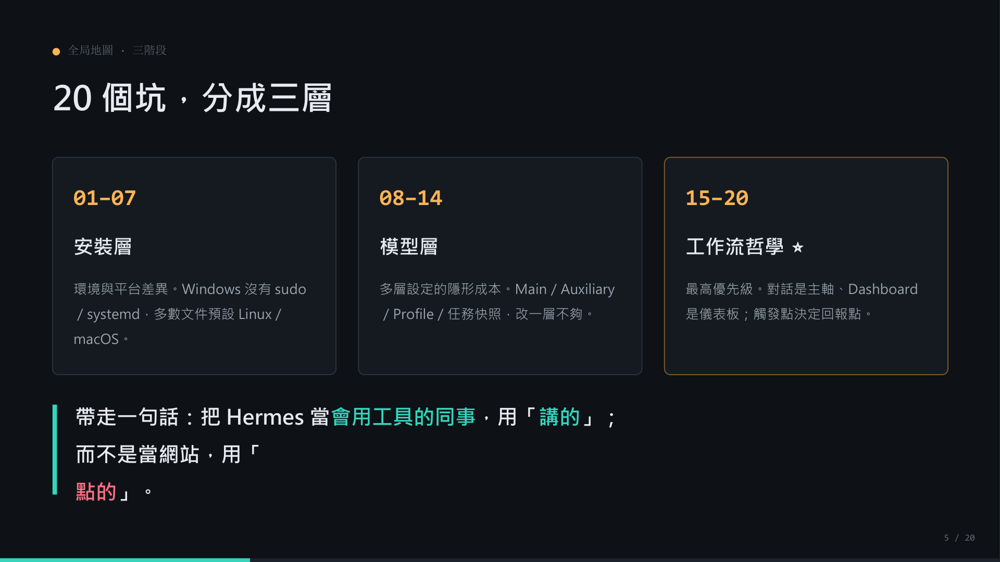
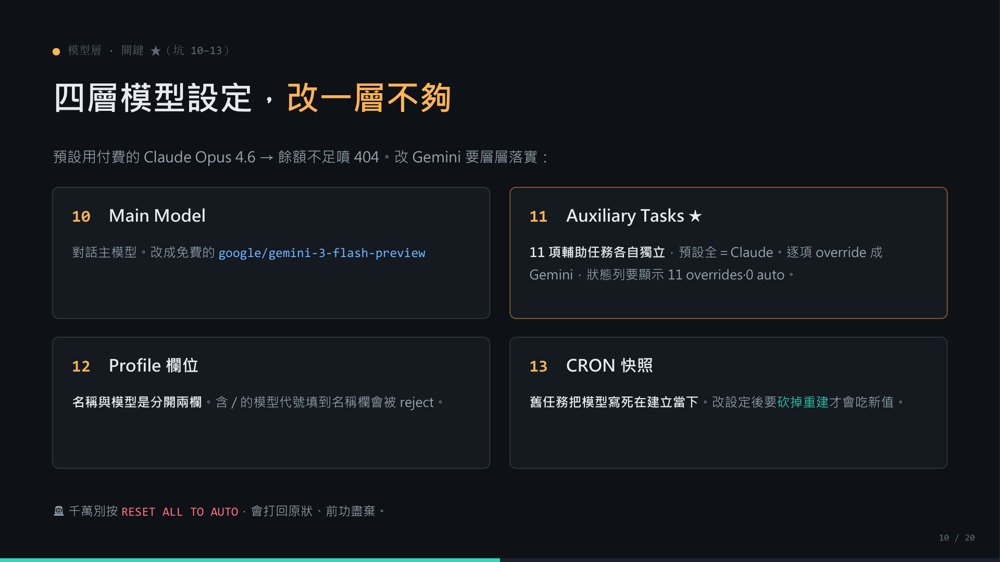
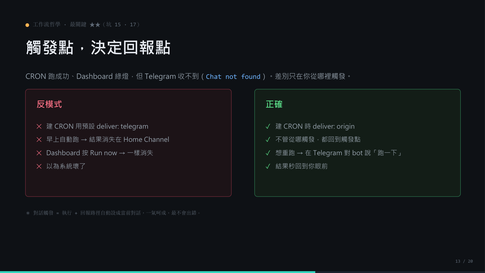
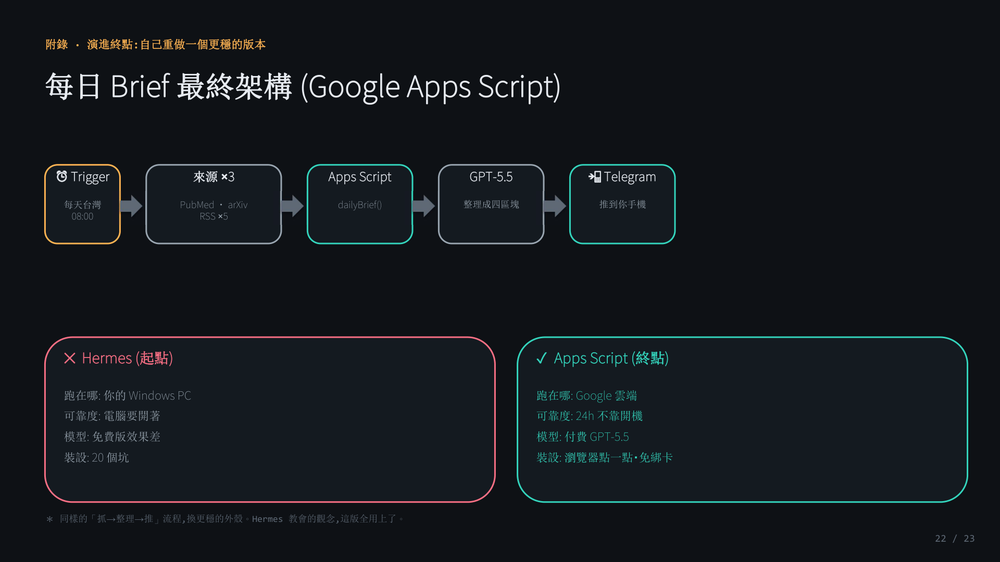

在 Windows 上部署 Hermes Agent：從 20 個坑整理出的 Agentic AI 實作札記
這不是一篇追逐新工具的開箱文，而是一份把本機部署、模型路由、Telegram 回報與研究 brief 自動化串起來的實作紀錄。我的重點是：當模型逐漸商品化，真正決定可用性的，往往是模型外面的 harness。

我第一次在 Windows 上部署 Hermes Agent 時，最深的感覺不是「這個工具很難」，而是「文件預設的世界，和我的工作環境不是同一個世界」。許多 agent 工具的說明習慣以 Linux 或 macOS 為基準；到了 Windows，問題會變成 PATH、Python 版本、PowerShell 語法、自動啟動、排程與權限的混合題。
但這些問題填平後，收穫也很明確：我開始更精準地理解 agent 和 chatbot 的差別。Chatbot 主要處理對話；agent 則要能使用工具、保存上下文、排程任務、處理失敗，並把結果送回正確的位置。這些能力合在一起，就是我在這次實作中一直碰到的核心概念：harness。
模型像推理核心；harness 則像作業系統，負責工具調度、記憶、排程、安全邊界與容錯。Windows 上的 20 個坑，表面上是安裝問題，實際上是在配置一套能讓 agent 真正工作的外殼。
一、安裝層：不要把 Linux 指令硬搬到 Windows
安裝階段最常見的卡點，是把錯誤歸因到 Hermes 本身。實際上，很多狀況只是 Windows 語境沒有被轉換好。例如 sudo、systemd、某些 shell 串接語法，在 Windows 上不是不能做，而是要換成 PowerShell 與相對應的啟動方式。
我的實務結論很簡單：如果官方提供 Windows PowerShell 安裝腳本，就先用腳本，不要一開始就用 pip install 手動拆相依性。Hermes 需要的 Python、Node.js、ripgrep、ffmpeg、uv 等元件，手動補齊會花掉大量時間；更重要的是，裝完後要重新開啟 PowerShell，讓 PATH 的更新真正生效。
sudo、systemd、背景服務或自動啟動時，先停一下，把它翻譯成 Windows 上實際可控的操作。這通常比反覆重裝更省時間。
二、模型層：改 Main Model 只是第一步
第二層是模型路由。為了控制成本或測試免費模型，很多人會把預設模型改成 Gemini 或 OpenRouter 上的 free model。問題是，Hermes 不只用一個 Main Model。它還可能在 summarization、triage、compression、vision、MCP routing 等 auxiliary tasks 中呼叫其他模型。

這也是我實作中最值得記下來的一點：CRON 任務可能保留建立當下的模型快照。也就是說，全域設定改完後，舊的排程任務未必會自動更新。若你發現明明已經改成免費模型，log 裡卻仍然出現付費模型相關錯誤，請把既有 CRON 任務刪掉重建一次。
| 設定層 | 要檢查什麼 | 實務提醒 |
|---|---|---|
| Main Model | 主要對話模型 | 這只是入口，不代表所有任務都跟著改。 |
| Auxiliary Tasks | 摘要、分流、壓縮、vision、MCP routing | 逐項 override，否則容易漏掉隱藏呼叫。 |
| Profile | Researcher、Coder 等角色設定 | 不同 profile 可能有獨立模型偏好。 |
| CRON Snapshot | 建立排程任務當下的設定 | 改完模型後，舊任務建議重建。 |
三、工作流層：Dashboard 是儀表板，對話才是主軸
第三層是最容易被誤解的地方。Dashboard 看起來像一般 SaaS 產品，所以直覺上會想在上面按按鈕、建任務、Run now。但 Hermes 的任務回報不是單純的 UI 狀態，它牽涉到「任務從哪裡被觸發」以及「結果要回到哪個 channel」。

deliver: origin。圖片取自 PDF 簡報第 13 頁。我遇到過的典型情境是：Dashboard 顯示任務成功，Telegram 卻沒有收到訊息，log 裡出現 Chat not found。後來才理解，關鍵不是任務有沒有跑，而是 Hermes 是否知道要把結果送回哪個對話。實務上，用 Telegram 對 bot 直接說「建立一個 CRON 任務，傳送至 origin」更穩定，因為 origin 指向建立任務的原始對話。
四、資料來源：指定 API，不要只說搜尋網路
當我把 Hermes 用在每日研究 brief 時，另一個重要教訓是資料來源。若只是要求 agent「搜尋最新 AI 或醫學消息」，輸出品質會受模型能力與搜尋工具影響，甚至可能產生看似合理但不能驗證的連結。
比較可靠的做法，是直接指定資料來源與 API endpoint。例如醫學文獻可以用 PubMed E-utilities，預印本可以用 arXiv API，新聞或產品更新則限定 RSS 或官方來源。這樣 agent 的任務就從「憑空搜尋」變成「依照明確來源抓取、整理、回報」。對醫療與研究工作流來說，這個差異非常重要。
五、從本機 Hermes 到雲端自動化
Hermes 的本機部署讓我看清楚 agent workflow 的結構：觸發、抓取、整理、回報、記錄。不過，如果目標是每天固定時間推送研究 brief，本機 Windows 電腦必須長開，就是一個現實限制。因此，我後來把穩定推播的版本轉成 Google Apps Script。

這不是否定 Hermes，而是把工具放到適合的位置：Hermes 適合探索 agent 能力、測試工具調度、理解對話式工作流；Google Apps Script 則適合固定排程、低成本、雲端長期運作。兩者的共同原則是：資料來源要明確，回報路徑要可驗證，錯誤要能追蹤。
如果只帶走六件事
- Windows 問題要先翻譯。不要把 Linux / macOS 文件直接搬到 Windows。
- 安裝優先使用官方 PowerShell 腳本。手動拆相依性會放大 PATH 與版本問題。
- 模型設定有多層。Main Model、Auxiliary Tasks、Profile、CRON snapshot 都要檢查。
- Dashboard 是儀表板。任務建立與回報路徑，常常回到 Telegram 或 CLI 更穩。
- 指定 API 比泛稱搜尋可靠。尤其醫療與研究工作流，來源可驗證比文字流暢更重要。
- 本機 agent 是學會工作流的入口。若要長期自動推播，可再把穩定任務搬到雲端。